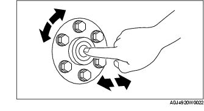

Pilot bearing inspection 1. Without removing the pilot bearing from the flywheel, turn the bearing while applying force in the axial direction. • If there is any malfunction, replace the pilot bearing. 